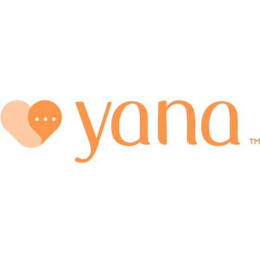

Diagnóstico de TDAH y autismo en 4 días, no en 6 meses.
Pruebas psicológicas convertidas en juegos y cuestionarios que la familia completa desde casa.
Equipo MentaLabs · Carlos Vilca · Andrea Salas · Demo Day · JAKU Emprende UNSA · Arequipa, 2026
Arequipa, agosto de 2026
“Mateo es flojo.”
Tiene 8 años. Es la tercera nota de la semana.
Su siguiente cita: en dos meses.
Agenda escolar · 3.er gradoJueves 13/08
No terminó la tarea. Se levantó 5 veces. Interrumpe a sus compañeros. Por favor, firmar.
Prof. Elena
El problema
La demanda crece. Los especialistas no alcanzan.
96 512
casos de autismo atendidos en 2025
25 010
casos de TDAH en solo 6 meses
294
psiquiatras públicos para 34 millones
60 a 90 días entre citas: 6 meses sin empezar terapia.
Fuentes: MINSA (2025) · Andina (jul. 2025) · La República / ALAFAL (oct. 2024) · EsSalud.
Usuario
Tres personas esperan lo mismo: un diagnóstico a tiempo.
LH
Luis, 38
Padre de Mateo · taxista
Cada cita le cuesta medio día sin trabajar.
RM
Roberto, 35
Psicólogo infantil
Corrige pruebas e informes de noche y sin pago.
EC
Elena, 41
Docente de 3.er grado
El informe llega cuando el año ya terminó.
Usuario · detalle
Los tres perfiles, completos
LH
Luis, 38
Padre de Mateo · taxista · Arequipa
Cada cita le cuesta medio día sin trabajar, y la siguiente es en 2 meses.
Hoy
Hace cola de madrugada, pregunta en grupos de padres y cotiza consultorios que no puede pagar.
Necesita
Un diagnóstico rápido y un informe que el colegio acepte.
“No puedo esperar más. No quieren aceptarlo en el colegio y no sé qué tiene.”
RM
Roberto, 35
Psicólogo infantil · consultorio propio
Corrige pruebas y redacta informes fuera de horario y sin pago.
Hoy
Pasa las pruebas a Excel o formatos manuales, uno por uno.
Contexto
60 000 psicólogos colegiados en el Perú; solo 487 psicoterapeutas acreditados.
“Pierdo demasiado tiempo llenando formatos. Y los padres que esperan mucho ya no vuelven.”
EC
Elena, 41
Docente de 3.er grado · IE pública
Detecta al niño en marzo; el informe llega cuando el año ya terminó.
Hoy
Escribe notas en la agenda y pide una evaluación que la familia no consigue.
Necesita
Saber qué adaptar en el aula, y pronto.
“Sé que algo le pasa, pero sin un informe no puedo hacer adaptaciones.”
Perfiles del Entregable 1 (Mariana, la madre; Roberto, el psicólogo), aplicados al caso Mateo. El perfil docente es una hipótesis a validar. Colegiados: El Comercio (abr. 2025).
La solución
De 6 meses a 4 días. Y el psicólogo sigue decidiendo.
01
Encuentra
un especialista colegiado
02
Conversa
entrevista por videollamada con el psicólogo
03
Responde
cuestionarios y baterías desde casa, el padre o el niño; juegos interactivos si el caso lo requiere
04
Recibe
el informe firmado
La solución · detalle
Qué hace cada paso
01 · Encuentra
Directorio de especialistas colegiados con tarifa, horarios reales y reserva en línea, para evaluación o terapia.
02 · Entrevista por videollamada
El psicólogo hace la entrevista inicial con la familia sin que nadie pierda un día de trabajo. Queda registrada en la historia clínica.
03 · Cuestionarios, baterías y juegos
El padre responde las baterías estandarizadas; si tiene edad, el niño responde las suyas con supervisión. Si el caso lo requiere, juegos interactivos (Stroop, D2-R, CARAS-R, Torre de Londres). Todo se corrige solo.
04 · Informe y seguimiento
Historia clínica firmada, diagnóstico CIE-10 y evolución visible para la familia y el colegio.
Una sola cuenta por familia: el padre o la madre administra el perfil de sus hijos menores de 18 años.
El producto, funcionando
Un mismo caso, tres pantallas.
El padre sigue el caso.
El niño responde.
El psicólogo firma.
LH
Luis · el padre
Ve pendientes, resultados e informes.
MH
Mateo · el niño
Responde con su papá al lado. Y si hace falta, juega.
RM
Roberto · el psicólogo
Recibe todo corregido y firma el diagnóstico.
Tiempo hasta el diagnóstico
De 6 meses a 4 días.
Sistema de salud público
6 meses o más3 a 5 citasConsultorio privado
≈ 2 semanasS/ 300 a S/ 1 200MentaLabs
4 días o menos2 a 3 sesiones
Lo que se puede hacer en casa, se hace en casa.
Público: EsSalud y RPP. Privado: radar competitivo (Entregable 2). MentaLabs: caso ilustrativo; se medirá en la campaña escolar 2027.
Tiempo al diagnóstico · detalle
Mateo: del martes 18 al viernes 21 de agosto
Martes 18
Primera consulta
Anamnesis firmada. Roberto asigna el Conners 4 para padres.
Martes 18 · 22:14
Cuestionario en casa
43 ítems, corregidos al instante: 77 puntos, rango muy elevado.
Jueves 20
Docente y juegos
Videollamada con la profesora. 4 juegos en 26 minutos: 36 métricas.
Viernes 21
Diagnóstico
TDAH, presentación combinada, grado moderado (CIE-10 F90.0).
3 sesiones
en 4 días
41 %
control de impulsividad (ICI) al inicio
2 h → 1 h 15
de tareas en casa tras el plan
Caso ilustrativo (docs/storytelling/STORYTELLING_MATEO.md): no son resultados de un estudio.
Seguimiento · detalle
Los mismos juegos que diagnostican, miden la evolución
+24 pts
en el índice de control de la impulsividad (CARAS-R) en 2 semanas, jugando desde casa los sábados.
El psicólogo lo ve con la comparación “antes / ahora”. La familia ve que el esfuerzo funciona: eso la retiene.
Competencia
Todos conectan con terapia. Nadie resuelve el diagnóstico infantil.
Niños y familias ↑Evaluación estandarizada →Conversación y terapiaTerapia online · MéxicoTerapia online · Chile

Chatbot de IA · México
Consultorios · papel y Excel
MentaLabs
Pruebas estandarizadas, digitalizadas
Corrección que no se puede manipular
Diseñado para la familia
Fuente: Entregable 2 (radar competitivo). Logos propiedad de sus titulares, usados solo con fines comparativos.
Competencia · detalle
Qué hay detrás de cada diferencia
Baterías psicométricas digitalizadas
10 instrumentos revisados en nuestra herramienta DTEP (28 en inventario). 6 cuestionarios y 4 juegos ya integrados.
Corrección que no se puede manipular
El puntaje lo calcula la base de datos y aplica reglas por edad.
Diseñado para la familia
Cuenta única del tutor, informes para el colegio y seguimiento en casa. Y también terapia, en el mismo lugar.
Terapify (México) Agenda y pago de terapia online para adultos. Retiene 38 % de cada ingreso.
Mindy (Chile) Terapia online para adultos.
Yana (México) Chatbot de IA: acompaña, pero no es un acto clínico.
Consultorios Papel y Excel; S/ 300 a S/ 1 200 por evaluación.
Mercado
Empezamos en Arequipa. El problema es de toda la región.
12–15 M
TAM · Latinoamérica
menores con sospecha de TEA, TDAH o problemas de lenguaje
95 000
SAM · Perú urbano
familias al año buscan diagnóstico privado · S/ 28–114 M
1 000
SOM · Arequipa, 2027
evaluaciones en el primer año · ≈ 1 % del SAM
Fuentes: Entregable 2 (TAM-SAM-SOM y radar de precios); ESCALE-MINEDU, Censo Educativo 2025; Towards Healthcare (2025).
Mercado · detalle
De dónde sale cada cifra
TAM · Latinoamérica
12–15 M de menores
de 3 a 16 años con sospecha de TEA, TDAH o problemas de lenguaje y aprendizaje. Mercado de salud conductual: USD 5 550 M (2025).
SAM · Perú urbano
95 000 menores / año
de familias NSE A, B y C que buscan diagnóstico privado. A S/ 300–1 200 por evaluación: S/ 28–114 M al año.
SOM · Arequipa, 2027
1 000 evaluaciones
≈ 1 % del SAM. Equivale a 20 psicólogos con una evaluación por semana. Canal: colegios con 1 500 alumnos y venta directa a familias.
Terreno inmediato: 130 445 alumnos de inicial y primaria solo en colegios públicos de Arequipa (36 701 de inicial y 93 744 de primaria).
Modelo de negocio
El motor son las familias.
20 %
Familias · B2C · motor principal
de cada evaluación (S/ 450) y de cada terapia
Psicólogos · SaaS
S/ 89
al mes
Colegios · B2B
S/ 8
por alumno al año
Meta 2027 · Arequipa
≈ S/ 123 000
1 000 evaluaciones · S/ 90 000
20 psicólogos · S/ 21 000
Colegios, 1 500 alumnos · S/ 12 000
Precios y metas son hipótesis a validar en la campaña escolar 2027. No incluye las terapias del marketplace.
Modelo de negocio · detalle
Cómo se llega a S/ 123 000
Familias · B2C
S/ 90 000
1 000 evaluaciones × S/ 450 × 20 %
Precio de mercado: S/ 300–1 200. También cobramos 20 % de cada terapia del marketplace (no incluido en la meta). Terapify retiene 38 %.
Psicólogos · SaaS
S/ 21 360
20 psicólogos × S/ 89 × 12 meses
Banco de pruebas, juegos, historia clínica e informes para sus propios pacientes. Se paga solo si le ahorra 2 horas al mes.
Colegios · B2B
S/ 12 000
1 500 alumnos × S/ 8 al año
Tamizaje de inicial y primaria con el departamento psicopedagógico y derivación a especialistas. Es el canal hacia las familias.
Las familias aportan el 73 %. Mil evaluaciones al año = 20 psicólogos con una evaluación por semana.
Hipótesis a validar: disposición a pagar (pregunta abierta del Entregable 1). Comisión de referencia: Terapify vía Forbes México.
Dónde estamos
El producto ya existe. Falta validarlo con familias reales.
Ya construido
✓ Plataforma web funcionando
✓ 6 baterías y 4 juegos clínicos
✓ Historia clínica firmada
✓ Marketplace con reserva en línea
Por validar en 2027
¿Cuánto pagan las familias?
¿Qué exige el Colegio de Psicólogos?
¿Los colegios aceptan el informe digital?
¿Cuánto tiempo ahorra el psicólogo?
Dónde estamos · detalle
Todo lo construido y todo lo pendiente
✓ Plataforma web funcional para familias, psicólogos y admin
✓ 6 baterías estandarizadas (233 ítems) con reglas por edad
✓ 4 juegos clínicos con métricas automáticas
✓ Historia clínica firmada y cuenta familiar única
✓ Marketplace de especialistas con agenda y reserva en línea
✓ Seguridad por roles en la base de datos
¿Cuánto pagan las familias por una evaluación asistida?
¿Qué exige el Colegio de Psicólogos para validar informes digitales?
¿Los colegios aceptan informes firmados desde la app?
¿Los padres completan las pruebas sin ayuda presencial?
¿Cuánto tiempo real ahorra el psicólogo por caso?
Preguntas abiertas tomadas de los Entregables 1 y 2.
Plan de salida al mercado
2027: sostenibles a mitad de año.
Desde el día 1: marketplace de especialistas activo
Enero a marzo
Campaña escolar
Colegios y familias
Abril a junio
Aval clínico
Colegio de Psicólogos y licencias
Julio
Punto de equilibrio
Los ingresos cubren la operación
Plan · detalle
Qué pasa en cada etapa
Enero a marzo
Campaña escolar
Tamizaje en colegios de Arequipa (B2B) y paquetes de evaluación para las familias (B2C).
Abril a junio
Aval clínico
Convenio con el Colegio de Psicólogos, licencias de las pruebas y suscripción para psicólogos.
Julio
Punto de equilibrio
Colegios, evaluaciones, suscripciones y terapias cubren la operación.
Fuentes de ingreso en julio de 2027
Marketplace
Terapias
B2C · familias
Evaluaciones
B2B · colegios
Tamizaje escolar
SaaS · psicólogos
Suscripción
Canal de entrada: departamentos psicopedagógicos de colegios EBR (Entregable 2). Estacionalidad: campañas de despistaje de enero a marzo.
Equipo
Equipo MentaLabs
CV
Carlos Daniel Vilca Salcedo
Bachiller en Ingeniería Industrial
Producto y tecnología
AS
Andrea Maryoriet Salas Riveros
Bachiller en Psicología
Validación con usuarios y alianzas
Buscamos sumar: un psicólogo clínico infantil como asesor.
Lo que buscamos
S/ 35 000 de inversión ángel o de fondos como StartUp Perú.
✓ Ya incubados en JAKU Emprende UNSA
35 %
25 %
25 %
15 %
Licencias y aval clínico
Validación
Desarrollo
Campaña escolar
En 6 meses: colegios aliados, 20 psicólogos suscritos y camino a 1 000 evaluaciones.
Lo que buscamos · detalle
En qué se usa y qué entregamos
35 %
Licencias de pruebas estandarizadas y aval clínico
25 %
Validación con familias y colegios
25 %
Desarrollo e infraestructura
15 %
Campaña escolar
Informe de impacto
Tiempos, costos y resultados de la campaña escolar, medidos y compartidos.
Tamizaje sin costo
Para los alumnos de inicial y primaria del colegio aliado.
Horas liberadas
Cuánto tiempo de corrección e informe ahorra cada psicólogo.
¿Y Mateo?
Mateo no era flojo. Tenía TDAH.
Mateo
Diagnosticado en 4 días. Hoy está en tratamiento.
Luis
Ya no pierde días de trabajo.
Roberto
Ya no escribe informes de noche.
Elena
Sabe qué adaptar en su aula.
Que ningún niño espere un año para que lo entiendan.
Gracias · Equipo MentaLabs
Preguntas del jurado
¿La app diagnostica sola?
No. Corrige, ordena y resume. El diagnóstico lo firma un profesional colegiado tras conocer al niño.
¿Es legal atender a distancia?
La Ley Marco de Telesalud (Ley 30421, reglamento D. S. 005-2021-SA) respalda la atención a distancia. Las pruebas presenciales siguen en consultorio.
¿Y los derechos de las pruebas?
CARS-2, Conners 4 o CARAS-R tienen editoriales titulares. El 35 % del fondo va a licencias; mientras tanto, se usan como prototipo.
¿Qué pasa con los datos de los niños?
Acceso por roles en la base de datos: solo el tutor y los especialistas que atienden al niño. Los informes se liberan a la familia solo firmados.
¿Por qué los psicólogos se sumarían?
Porque les ahorra horas no pagadas de corrección e informes, y les trae pacientes derivados de colegios.
¿Qué los hace difíciles de copiar?
Las baterías digitalizadas y validadas, las reglas por edad y la relación con colegios. Una app de citas no tiene nada de eso.
Fuentes
MINSA, “Minsa promueve la detección temprana del autismo y registró más de 764 000 atenciones por TEA”, gob.pe: 96 512 casos atendidos en 2025.
Andina, “TDAH: más de 25 000 casos se han registrado en hospitales del Minsa en lo que va del año” (2025): 25 010 casos ene–jun 2025, 80 % niños.
La República, “Solo hay 294 psiquiatras para 34 millones de peruanos en el sistema público, según ALAFAL” (oct. 2024).
El Comercio, “176 psicólogos por cada 100 mil habitantes” (abr. 2025): ~60 000 colegiados; 487 psicoterapeutas formados en universidades acreditadas.
RPP, informe técnico de EsSalud sobre demora de citas; EsSalud (2023), Hospital Almenara: 50 % TEA y 30 % TDAH entre niños con problemas conductuales (Entregable 1).
ESCALE-MINEDU, Censo Educativo 2025, Arequipa: 36 701 alumnos de inicial y 93 744 de primaria en instituciones públicas.
Towards Healthcare, Latin America Behavioral Health Market (2025): USD 5 550 M.
Forbes México sobre Terapify: 38 % de cada ingreso a operación y marketing.
Equipo MentaLabs, Entregable 1 (problema y perfil de usuario) y Entregable 2 (mercado, competencia y oportunidad), WICHARIY 2026.
Versión inversionistas · ← → navegar · ↓ ↑ sub-diapositiva · N notas · T cronómetro · F o F5 pantalla completa · . pantalla negra · P imprimir / PDF